- على الوالدين تجنب الخوف الزائد والإفراط في تدليل الطفل بحجة أنه مريض، لأن هذا يوجد لديه نوعًا من التوتر النفسي. بل على العكس يجب أن نولد فيما بينه وبيننا جوًا من الود والتفاهم. لأن بناء جو إيجابي أمر ضروري ومهم في تشجيع الطفل لعيش حياة صحية ..
- يجب أن تكون معاملة الأهل للطفل المصاب بداء السكري طبيعية جدًا، إذ إن الصحة النفسية للطفل تعتمد نوعًا ما على نوعية انفعال الوالدين ومداه وآلية تربيتهم.
- يجب تعلم قدر ما تستطيع عن مرض السكري، والمعرفة هي القوة، وإذا فهمت مرض طفلك ستكون أكثر قدرة على التعامل معه. اعرف أعراض نقص وارتفاع نسبة السكر في الدم قدر ما تستطيع، طفلك يعتمد عليك.
- تأكد من وجود حلوى بمتناول يد طفلك حتى لا يحدث له هبوط في السكر دون وجود حلوى بجانبه .
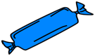
- عندما يكبر طفلك علمه كيف يحقن الأنسولين لنفسه، أفضل سن لتعلم هذا هو 9 سنوات. 7
- علم طفلك كيفية قياس مستويات الجلوكوز في الدم..
- خذ طفلك إلى الطبيب بصورة منظمة للفحص، وينصح الخبراء بفحص العينين ووظائف الكلى عند الأطفال.
- يجب العناية بجلد الطفل والجروح والحساسية والاهتمام بالقدمين يعتبر ضرورياً ويجب عدم المشي أو الجري حافي القدمين , وكذلك عدم استخدام الأحذية الضيقة على القدمين .
- لا تدع الطفل ينام بمفردة في الليل ويجب أن يكون شخص أخر في الغرفة له معرفة بأعراض هبوط السكر مثل العرق الزائد خلال فترة النوم كذلك يجب أن يكون شخصاً واحداِ على الأقل في المنزل له معرفة تامة باستخدام إبرة الجلوكاجون في حالة الإغماء أو التشنجات لا سمح الله.
- يأخذ التلاميذ المصابون بداء السكري الأنسولين يومياً وذلك لبناء سكر الدم عندهم طبيعياً قدر الإمكان و لكي تنمو أجسامهم كغيرهم من التلاميذ .
- يجب أن يحمل التلميذ المصاب بداء السكري معه على الدوام البطاقة الدالة على أنه يعاني من ذلك الداء .
- وعندما يمرض التلميذ المصاب بالسكري يجب إبلاغ والديه والطبيب فوراً.
- قد يحصل انخفاض مستوى السكر بسبب تناول كمية غير كافية من الطعام أو بسبب الإفراط في التمارين الرياضية أو أخذ جرعة أنسولين أكثر من المقرر قبل الطبيب .
- وقد يحصل انخفاض السكر في أي وقت وخاصة إذا تناول الوجبات عن مواعيدها أو بعد التمارين الرياضية المجهدة
- من القواعد السليمة أن يعطى التلميذ المصاب بداء السكري الذي يتصرف بصورة غريبة طعاماً (سكر بسيط ) على الفور مثل أن يعطى علبة عصير فواكه أو نصف كوب من الكولا العادية في حالة إصابته بانخفاض سكر الدم.ومن المفروض أن تظهر علامات التحسن على التلميذ بعد 10-15 دقيقة وبعد ذلك يجب إعطائه وجبة خفيفة .
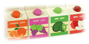
- يجب تعليم التلاميذ المصابين بداء السكري على فهم وملاحظة أعراض انخفاض السكر وضرورة حمل بطاقة أو أسورة تدل على أنه مصاب بالسكر.
- ربما يحتاج التلميذ المصاب بداء السكري إلى إشراف أثناء حصة التربية وبعدها خشية أن يصاب بانخفاض السكر عن المعدل الطبيعي.
- يجب على الأبوين تجهيز وجبة خفيفة لطفلهم لتناولها في المدرسة وذلك قبل ممارسة الرياضة اليومية .وعلى المدرسين أن يتأكدوا من أن تناولها بالكامل .
الخطوات التفصيلية (لاستخدام نوع واحد من الأنسولين ) :
في البداية يجب أن تعد كل ما يلزمك لذلك (مسحة طبية –إبرة الأنسولين ,الأنسولين ).
1- أغسل يديك جيداً وجففها.
2- راجع بعناية البيانات المدونة على الأنسولين مثل تاريخ الانتهاء وتاريخ فتح العبوة.
3- دحرج القارورة بين يديك بلطف ولا ترجها بعنف ( هذه الخطوة مهمة جداً عند استخدام المعكر وليس الأنسولين الصافي ).
4- امسح الغطاء المطاطي لقارورة الأنسولين بالمسحة الطبية.
5- قم بنزع غطاء مكبس المحقنة أولاً ثم قم بنزع غطاء الإبرة البرتقالي .
6- اسحب إلى الوراء مكبس المحقنة بقدر جرعة الأنسولين المطلوبة وبذلك تكون كمية الهواء التي بالحقنة مساوية لجرعة الأنسولين المطلوبة .
7- ضع القارورة في الوضع القائم ثم اغرز الأبرة المعدنية باستقامة في وسط غطاء القارورة المطاطي.
8- ضع الهواء داخل القارورة (هذه الخطوة تسهل عليك سحب الأنسولين)
9- اقلب القارورة وتأكد أن طرف الأبرة المعدنية تحت مستوى الأنسولين في القارورة .
10- اسحب المكبس إلى الأسفل أكثر بقليل من الجرعة التي تنوي تناولها.
11- إذا لاحظت وجود فقاقيع من الهواء داخل المحقنة حاول أن تتخلص منها بنقر خفيف على الحقنة بواسطة إصبعك, وعندما تتجمع هذه الفقاقيع في أعلى المحقنة ادفعها داخل القارورة.
12- ادفع المكبس إلى الأعلى حتى يصل على الجرعة الصحيحة .
13- الإبرة الآن جاهزة للاستخدام , يجب أولاً سحب الأنسولين الصافي ثم الأنسولين المعكر.
14- مرة اخرى حرك برفق قارورة الأنسولين المعكر حتى تضمن أن الأنسولين قد خلط جيدا.
15- اجعل قارورة الأنسولين المعكر ثم أغرز الإبرة في غطائها المطاطي وتأكد أن طرف الإبرة تحت مستوى الأنسولين في القارورة .اسحب المكبس بعناية حتى يصل إلى الجرعة المحدد’ من الأنسولين العكر.
التعليمات المتبعة لمريض السكري الموصوف له العلاج بالأنسولين بنوعية الصافي والعكر معاً:
1- غسل اليدين
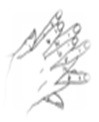
2- حرك القارورة بين يديك لخلط الأنسولين.
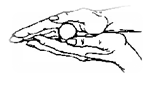
3- نظف غطاء القارورة بمسحة طبية .
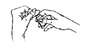
4- اسحب كمية من الهواء إلى الداخل الحقنة تعادل كمية الأنسولين الصافي.
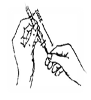
5- دفع الهواء الموجود في الحقنة إلى داخل قارورة الأنسولين الصافي ثم نزع الحلقة من القارورة .
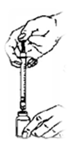
6- ثم سحب كمية من الهواء إلى داخل الحقنة تعادل كمية الأنسولين العكر.
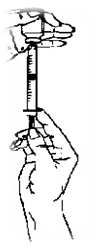
7- ادفع الهواء الموجود في الحقنة على داخل قارورة الأنسولين العكر ثم نزع الحقنة من القارورة .
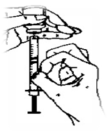
8- ثم اقلب القارورة والحقنة إلى الأسفل واسحب الكمية المحددة من الأنسولين الصافي .
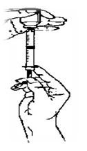
9- ثم اقلب قارورة الأنسولين والحقنة على الأسفل واسحب الكمية المحددة من الأنسولين العكر فو الأنسولين الصافي بحيث يصل إجمالي الكمية من النوعين إلى الجرعة المطلوبة .
10- تأكد من خلو الحقنة من فقاعات الهواء بنقر حقنة الأنسولين.
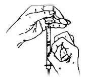
التعليمات المتبعة لمريض السكري الموصوف له العلاج بالأنسولين بنوعية الصافي والعكر معاً:
1- غسل اليدين
2- حرك القارورة بين يديك لخلط الأنسولين.
3- نظف غطاء القارورة بمسحة طبية .
4- اسحب كمية من الهواء إلى الداخل الحقنة تعادل كمية الأنسولين الصافي.
5- دفع الهواء الموجود في الحقنة إلى داخل قارورة الأنسولين الصافي ثم نزع الحلقة من القارورة .
6- ثم سحب كمية من الهواء إلى داخل الحقنة تعادل كمية الأنسولين العكر.
7- ادفع الهواء الموجود في الحقنة على داخل قارورة الأنسولين العكر ثم نزع الحقنة من القارورة .
8- ثم اقلب القارورة والحقنة إلى الأسفل واسحب الكمية المحددة من الأنسولين الصافي .
9- ثم اقلب قارورة الأنسولين والحقنة على الأسفل واسحب الكمية المحددة من الأنسولين العكر فو الأنسولين الصافي بحيث يصل إجمالي الكمية من النوعين إلى الجرعة المطلوبة .
10- تأكد من خلو الحقنة من فقاعات الهواء بنقر حقنة الأنسولين.
1- طهر مكان الحقن بالمسحة الطبية.
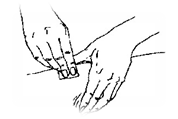
2- أمسك الجلد بين الإبهام والسبابة وأدخل الإبرة باستقامة داخل الجلد باليد الأخرى.
3- أدخل الإبرة باستقامة داخل الجلد باليد الأخرى.
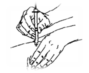
4- اسحب الإبرة من الجلد بعد 30 ثانية من حقن الأنسولين ولا تدلك مكان الحقن ثم تخلص من الإبرة في مكان مغلق بإحكام.
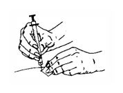
أفضل أماكن حقن الأنسولين :
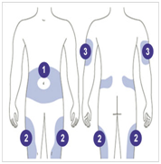
*من المهم جداً أن لاتكرر أخذ الإبرة في نفس المكان .
مرض السكري النوع الأول والمسمى بسكري الاطفال يختلف عن مرض السكري النوع الثاني الذي يكون بسبب زيادة الوزن وضعف مستقبلات الأنسولين، وإن كان كلا المرضين يحمل نفس المسمى.
إن السبب الرئيس للسكري النوع الأول هو فقدان الأنسولين ولذلك فإن العلاج الوحيد هو التعويض بالأنسولين وليس هناك مجال لعلاج السكري النوع الأول بالحبوب المخفضة للسكر أو بالأعشاب أو بغيرها.
مرض السكري النوع الأول هو مرض حاد البداية والمقصود بكلمة حاد البداية هو أن ظهوره يحدث خلال أسابيع معدودة وليس خلال سنوات عديدة كما هو الحال في مرض السكري النوع الثاني.
ولذا يجب التنبيه أن مرض السكري النوع الأول قد يحدث فجأة ويكتشف خلال أيام أو أسابيع وليس بالضرورة خلال زيارة الطفل للطبيب الأول.
أسباب حدوث السكر عند الأطفال:
ترجع الإصابة بداء السكري من النوع الأول عند الأطفال بسبب وجود القابلية الوراثية والجينات المسئولة عن الاستعداد للإصابة به من أحد الوالدين بالإضافة إلى توفر بعض العوامل التي يعتقد أنها تساعد على حدوث الإصابة مثل:عامل المناعة وعامل الالتهاب وعامل الوراثة.
1- عامل المناعة :
أنه عند إصابة الطفل بالتهاب ما, يبدأ الجسم بمكافحة هذا الالتهاب عن طريق المناعة الطبيعية ولكن عندما تتكون أجسام مضادة لهذا الالتهاب تكون أيضا مضادة لخلايا بيتا في البنكرياس وتحطمها كما تحطم الجرثومة المسببة للالتهاب.
2- عامل الالتهاب :
عند الإصابة بنوع معين من الفيروسات والمسببة للالتهابات تذهب عن طريق الدم إلى البنكرياس وتحطم خلايا بيتا بطريقة مباشرة.
3- عامل الوراثة :
ويلعب هذا العامل دورا ليس بالكبير حيث يزداد احتمال إصابة الطفل بالسكر عند وجود أخ أو أخت أو أحد الوالدين مصابا بالسكر ولكن هذه الزيادة في الاحتمال لا تزيد عن نسبة 10 % وتكثر هذه الزيادة عند التوأمين حيث تصل الى 40%.
أعراض مرض السكري :
• كثرة التبول.
• زيادة العطش وكثرة شرب الماء.
• الشعور بالجوع.
• نقص الوزن.
• الإرهاق والتعب.
يظهر السكر في الأطفال بشكل مفاجئ وتكون أعراضه واضحة من البداية وإن لم يتم تشخيصه في فترة مبكرة تتدهور حالة الطفل بسرعة